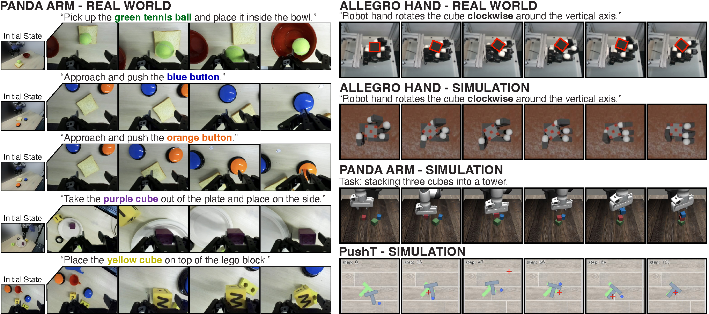
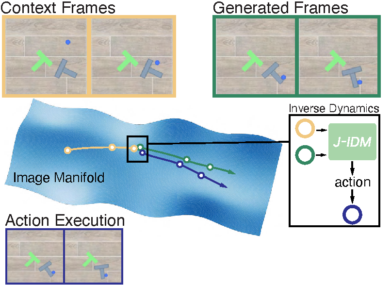
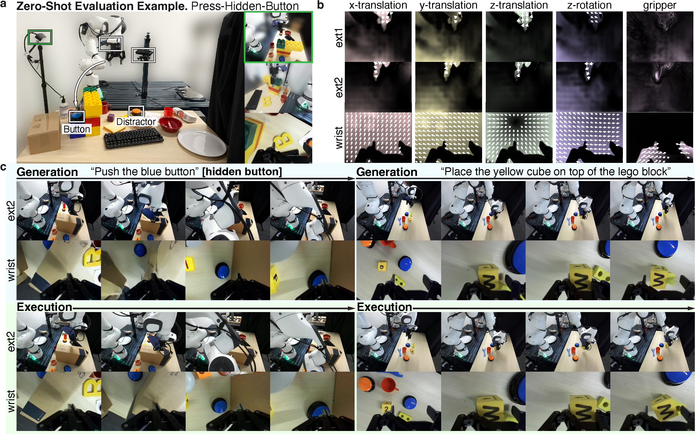
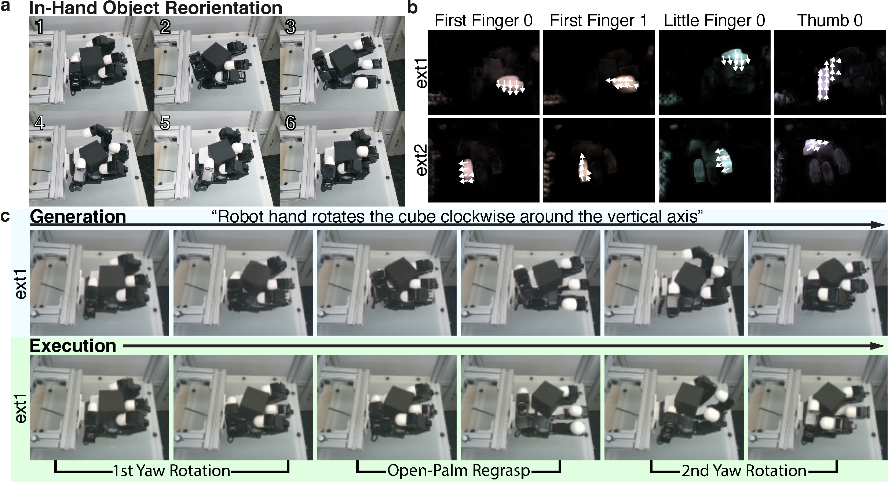
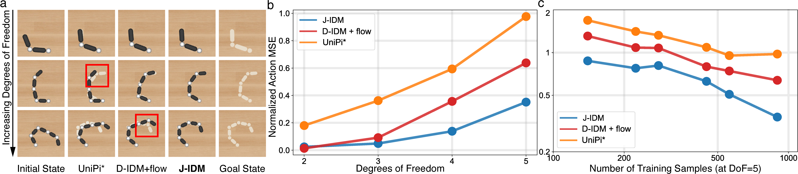

VERA (ours)
Prompt “push the blue button.”
The video planner imagines a path around the wall; the Jacobian IDM translates that plan into an action chunk that presses the hidden target.
VERA the Video-to-Embodied Robot Action Model
Anonymous Authors · under double-blind review
A 14B video generative model, paired with a faithful inverse dynamics model, solves a wide range of robotics challenges — from zero-shot pick-and-place on a real-world Panda arm to contact-rich re-orientation of a cube with a 16-DoF multi-fingered hand.

Video generative models have emerged as a promising robotics backbone, capable of generating videos that depict the completion of complex tasks across embodiments and environments. Many current approaches finetune video models with action-labeled data, turning them into robot foundation models that jointly predict future observations and actions.
In this paper, we study an alternative, underexplored route for transferring the capabilities of video models into robot control: leave the video planner as is, while training an embodiment-specific inverse dynamics model (IDM). This decoupling offers several advantages: the video planner can remain embodiment-agnostic; different video models can be interchanged easily without re-training the IDMs; and the inverse dynamics model can be trained with the more readily available autonomous self-play data.
With this in mind, we present a closed-loop, video-to-action policy that combines an action-free video world model with a carefully designed IDM based on the robot embodiment Jacobian. We find that such a structure yields a faithful video-to-action translator that is both data-efficient and scalable to high-dimensional action spaces. Our policy, which we coin the Video-to-Embodied Robot Action Model (VERA), achieves strong performance across simulated and real-world benchmarks, including zero-shot Panda arm manipulation and 16-DoF Allegro-hand dexterous cube re-orientation. The same video planner can be used across multiple embodiments by pairing it with different embodiment-specific IDMs.
Our results show that decoupled video planning plus faithful video-to-action translation is a viable alternative route towards zero-shot, cross-embodiment, and generalizable robot control.
From a short observation history, a video generative model imagines a visual plan; the Jacobian IDM inverts each step of that plan into a chunk of low-level actions, the robot executes them, and observations return to the video model for the next round.

After post-training the video model on DROID and pairing it with a Jacobian-IDM, a single VERA policy executes six language commands in an unseen scene with ad-hoc camera placements — no task-specific finetuning. Pick a prompt below to see the wrist camera and external views side by side.
Prompt “place the yellow cube on top of the lego block.”
Prompt “approach and push the blue button.”
Prompt “approach and push the orange button.”
Prompt “pick up the green tennis ball and place it inside the bowl.”
Prompt “place the yellow cube on top of the plate.”
Prompt “take the purple cube out of the plate and place it on the side.”
With identical initial observations, the prompt alone steers the planner — and therefore the robot — to different objects on the table. The video model's prompt-following capability flows directly through the faithful translator into the executed action chunk.
Same initial observation, three different goals — the prompt alone steers the planner to a different object on the table.
A 16-DoF Allegro hand orchestrates contact-rich finger motion to rotate a cube on the real robot. We show the executed rollout side-by-side with the dreamed plan and the visuomotor Jacobian read off by the IDM.
Prompt “rotate the cube clockwise around the vertical axis.”
Two opposite language prompts produce opposite rotations from the same initial configuration — a clean check that the video planner's instruction grounding survives the translation step.
Prompt “rotate the cube clockwise around the vertical axis.”
Prompt “rotate the cube counter-clockwise around the vertical axis.”
A classical benchmark for imitation learning: planar pushing with contact-rich corner regrasps. VERA produces smooth, goal-directed rollouts that recover from mid-trajectory slips.
The figures below summarize task setup, learned Jacobian visualization, and the J-IDM design study — provided here as supplementary reference.


A controlled study isolates what makes faithful translation possible: gains come from constraining actions to enter through a learned tangent map.

The path from a better video model to a better robot runs through the inverse dynamics model. We have shown that our Jacobian-IDMs, as one realization among many possible faithful IDMs — paired with an action-free video planner — enable zero-shot, multi-embodiment robot control. We hope our results motivate careful attention to the design and evaluation of future IDMs.